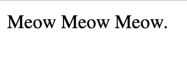

This was the first code I ever wrote. It was 14 lines, 1 of those lines were original by muah. The other 13 lines were html5 boilerplate :)
Those 14 lines of code rendered like so
This was the first website I designed highlighting my favorite recipe- tacos!.
It was comprised of 3 HTML pages and 1 CSS page. This was a fun project for me because I got to talk about tacos! :)
Check the code out on Github!
This was the first navbar I tried re-creating based on one that was provided to us.
It was comprised of 1 HTML page and 1 CSS page. This project was a struggle for me, specifically with spacing :(
Check the code out on Github!